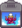

Template:CookingChannel
From Stardew Valley Wiki
Jump to navigation
Jump to search
Use
{{CookingChannel|21 Spring, Year 2}}

The Queen of Sauce
21 Spring, Year 2
Category
:
Templates
Navigation menu
Personal tools
Create account
Log in
Namespaces
Template
Discussion
Variants
Views
Read
View source
View history
More
Search
Navigation
Main page
Recent changes
Admin noticeboard
Help Editing
Random page
Official Links
Official Site
Official Forums
Official Merchandise
Discord
Reddit
Tools
What links here
Related changes
Upload file
Special pages
Printable version
Permanent link
Page information
Page values
In other languages
Deutsch
Español
Français
Italiano
日本語
한국어
Magyar
Português
Русский
Türkçe
中文